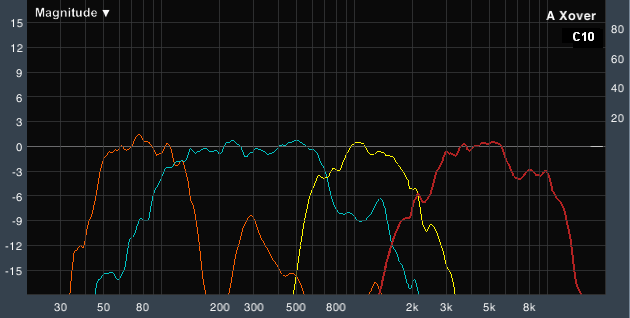
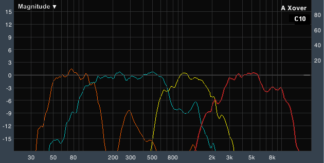

O que é alinhamento de som?
Esta função nos permite encontrar a diferença de tempos de chegada do som emitido por cada um dos transdutores até um microfone, comparados com um sinal de referência, que pode ser música ou ruído rosa.

Esta função nos permite encontrar a diferença de tempos de chegada do som emitido por cada um dos transdutores até um microfone, comparados com um sinal de referência, que pode ser música ou ruído rosa.
